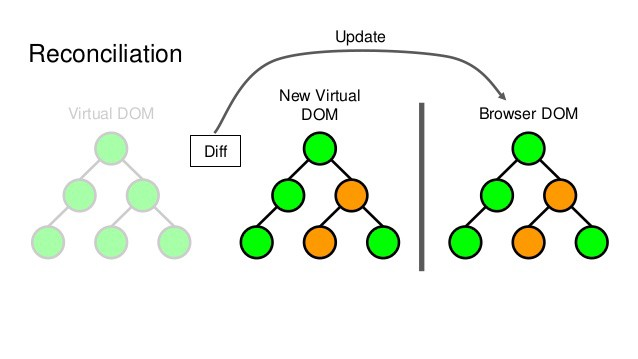

Introducción
React es una biblioteca JavaScript altamente eficiente y declarativa que se utiliza para crear interfaces de usuario interactivas.
Fue creado por el ingeniero de Facebook Jordan Walke y se lanzó en mayo de 2013.
¿Para qué?
React es declarativo, esto permite crear interfaces de usuario interactivas de forma sencilla. Diseña vistas simples para cada estado en tu aplicación, y React se encargará de actualizar y renderizar de manera eficiente los componentes correctos cuando los datos cambien.
Las vistas declarativas hacen que tu código sea más predecible, por lo tanto, fácil de depurar.
La API declarativa de React permite indicarle el estado deseado de la IU, y este se hará cargo de llevar el DOM a dicho estado. Esto abstrae la manipulación de atributos, manejo de eventos y actualización manual del DOM que de otra manera sería necesario utilizar para construir la aplicación.
Está basado en componentes permitiendo encapsularlos con su propio estado y convertirlos en interfaces de usuario complejas.
Ya que la lógica de los componentes está escrita en JavaScript y no en plantillas, los datos se transmiten de forma sencilla a través de la aplicación y mantienen el estado fuera del DOM.
React es multiplataforma, puede también renderizar desde el servidor usando Node, así como potencializar aplicaciones móviles usando React Native.
Listado de renderizadores
¿Por qué usarlo?
- La modificación del árbol DOM es lenta y costosa, React se presenta con un gran rendimiento siendo eficiente y flexible gracias al Virtual DOM.
- Facebook es el principal mantenedor del proyecto, existe una gran cantidad de documentación y recursos disponibles en la web que hace que la curva de aprendizaje sea muy fluida.
- Es retro compatible, migrar de versiones anteriores a nuevas es bastante sencillo.
- La estructura de componentes es sencilla de mantener, facilita la reutilización del código, es eficiente en el desarrollo de software complejo.
- Es OpenSource, lo que permite a colaboradores externos a Facebook la colaboración en el desarrollo de React.
- Lo utiliza Facebook en sus productos, a diferencia de otras librerías/frameworks, React es la base de sus productos, WhatsApp, Instagram, Facebook…
¿Qué es el Virtual DOM?
El Virtual DOM es un patrón para la representación “virtual” de la interfaz de usuario la cual se mantiene en memoria y en sincronía con el DOM real mediante una librería, como puede ser, ReactDOM. Este proceso se conoce como reconciliación.
El término Virtual DOM es normalmente asociado con elementos de React ya que son objetos representando la interfaz de usuario. Sin embargo, React también usa objetos internos llamados "fibers" para mantener información adicional acerca del árbol de componentes. Éstos pueden ser también considerados como parte de la implementación de Virtual DOM de React.
React Fiber es el motor de reconciliación desde la versión 16, mediante una reimplementación continua aumenta su idoneidad en áreas como animación, diseño y gestos, mediante el renderizado incremental, capacidad de dividir el trabajo de renderizado en partes y distribuirlo en varios fotogramas.
tip
React no actualiza el DOM aplicando cambios de uno en uno sino que calcula todos los cambios que se han producido en el Virtual DOM, y los aplica de forma conjunta en el DOM. Este proceso se conoce como Reconciliación.
